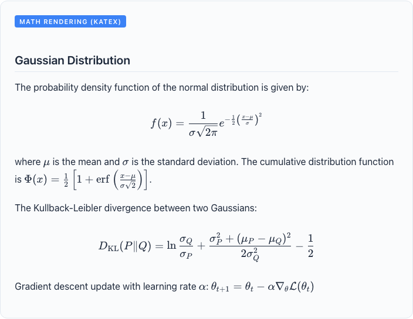
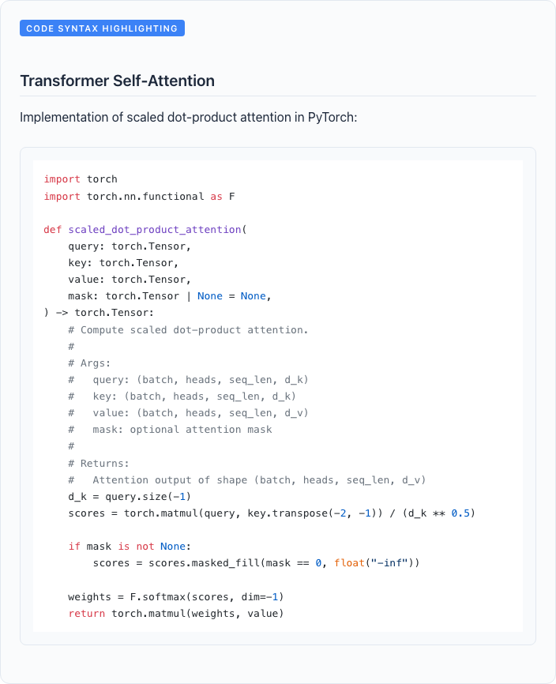
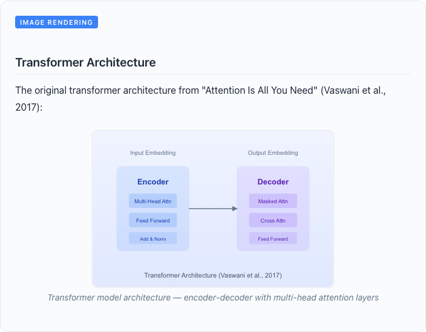
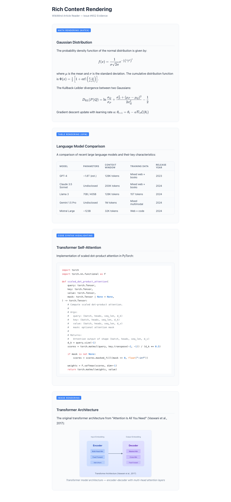

PR #452 — Rich Content Rendering
Summary
This PR adds rich content rendering to the WikiMind article reader: LaTeX math (via KaTeX), GFM tables with styled headers and zebra striping, syntax-highlighted code blocks (via highlight.js), and enhanced image rendering with captions. The compiler prompt is updated to preserve these blocks through recompilation.
| Content Type | Library | Status | Notes |
|---|---|---|---|
| Math (inline + display) | remark-math + rehype-katex |
PASS | Inline $...$ and display $$...$$ both render correctly |
| Tables | remark-gfm (existing) + custom components |
PASS | Styled thead, zebra rows, rounded borders, overflow scroll |
| Code blocks | rehype-highlight |
PASS | Language auto-detection, GitHub theme, JetBrains Mono font |
| Images | Custom img component (existing, enhanced) |
PASS | Captions, rounded borders, shadow, /api/ path resolution |
| Compiler preservation | System prompt update | PASS | Rich content blocks treated as opaque in compiler + concept compiler |
Files Changed
apps/web/package.json— Added katex, remark-math, rehype-katex, rehype-highlightapps/web/src/components/wiki/ArticleReader.tsx— Math, code, table, image rendering plugins + componentsapps/web/src/index.css— KaTeX display math, code block, and table stylingsrc/wikimind/engine/compiler.py— Rich content preservation rules in system promptsrc/wikimind/engine/concept_compiler.py— Rich content preservation rules in concept synthesis prompt
Evidence Screenshots
Math Rendering (KaTeX)

Inline math ($\mu$, $\sigma$, $\alpha$) and display math (Gaussian PDF, KL divergence, gradient descent) render correctly via remark-math + rehype-katex.
Table Rendering (GFM)

GitHub-flavored markdown tables with styled headers (uppercase, slate background), zebra-striped rows, rounded border container, and horizontal overflow scroll.
Code Syntax Highlighting

Python code with syntax highlighting via rehype-highlight (GitHub theme). Keywords, strings, built-ins, and comments are color-coded. JetBrains Mono font for readability.
Image Rendering with Captions

Images render with rounded borders, subtle shadow, and italic captions. The img component resolves /images/ and /api/ paths to the backend URL automatically.
Full Page View

All four rich content types rendered together in a single article view, demonstrating the complete rendering pipeline.